Friday 27 Nov, morning. A day can no longer be signed off or published while an item on it is missing a time. It is built and checked, and it waits for your look and your "merge live".
Reply with "all as recommended", or the number and your answer. Smaller questions (sixteen) and the amendment-colours plan (seven) come in later rounds.
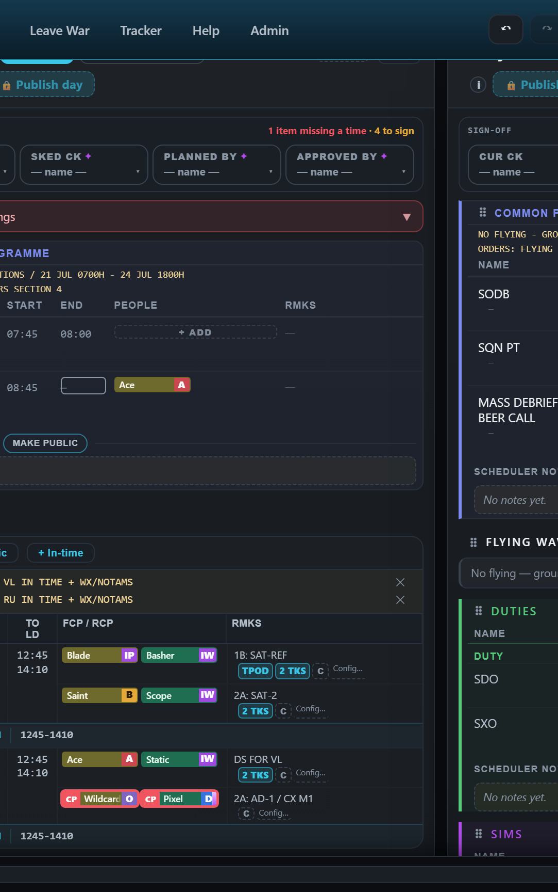
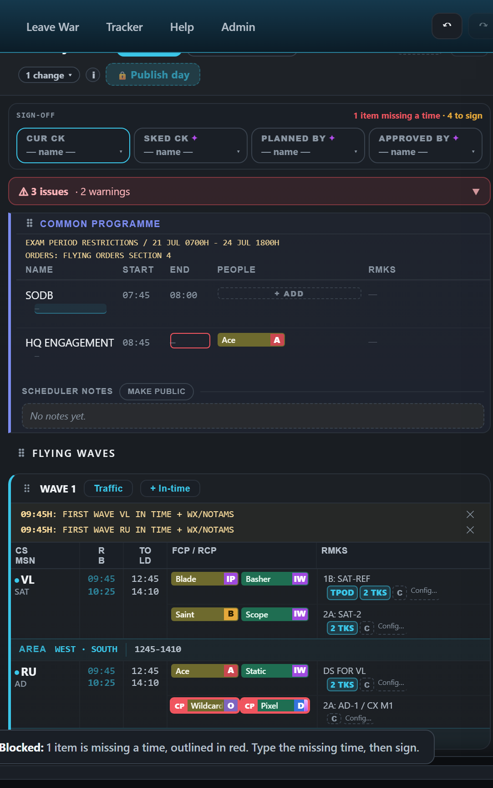
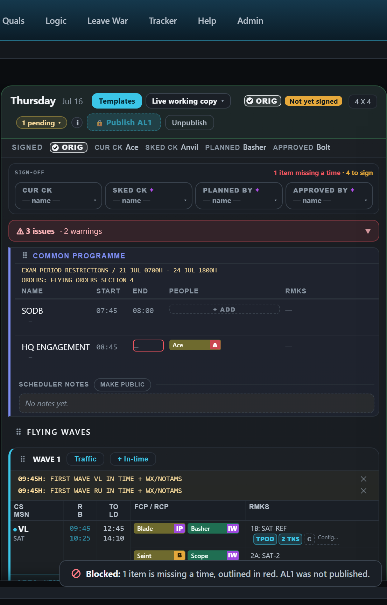
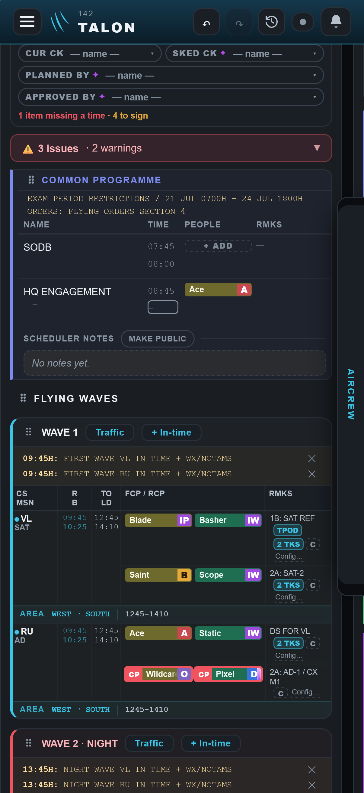
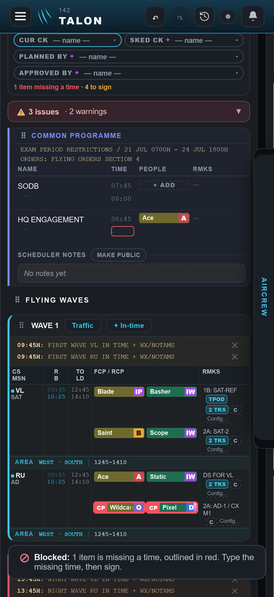
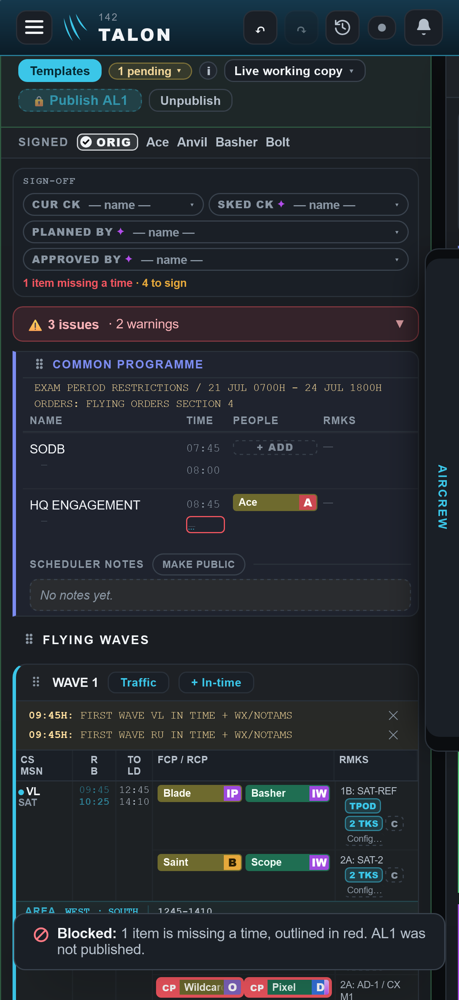
When: a scheduler opens Edit Schedule's Legend to see what a mark means, usually the first few times he meets the outline.
You chose the words "Time missing, fill it". Drawn at the Legend's foot: an empty box outlined grey, one outlined red, then your words. It is not built yet; I build it once you approve the look.
Recommended: approve as drawn.
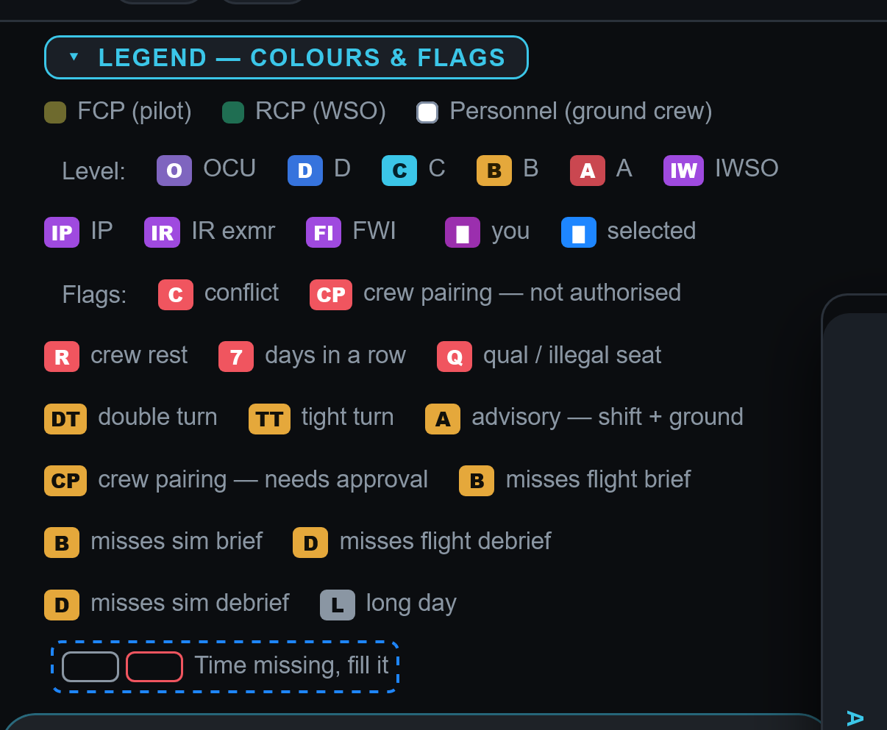
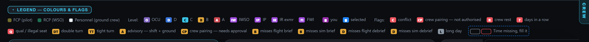
When: on a weekend or holiday day with an input that has no OIL answer, a scheduler picks his name in a sign-off box, and the day's OIL list opens first. This happens a few times a month.
Your rule: Later means "not my call", and the next sign-off asks again. Today's line, "Later: Ace signs, but nobody on it earns OIL.", is no longer true. A fresh Fable adjusted the new words:
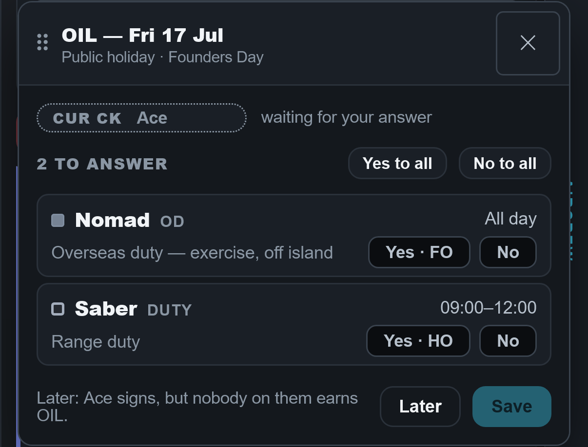
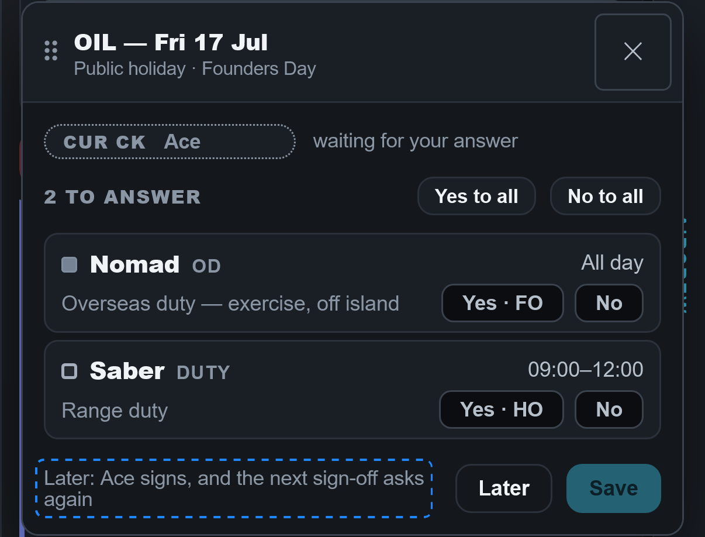
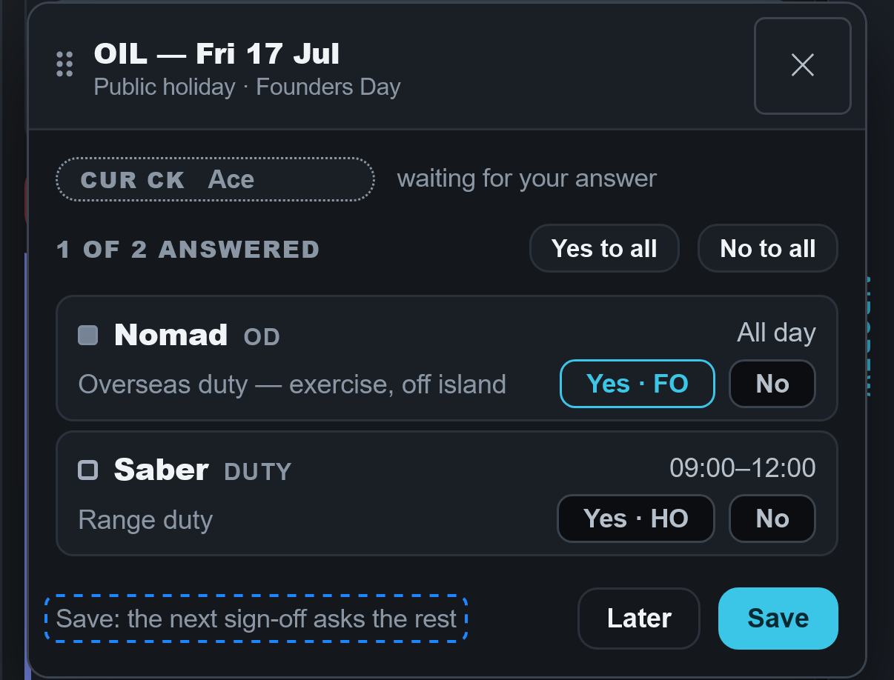
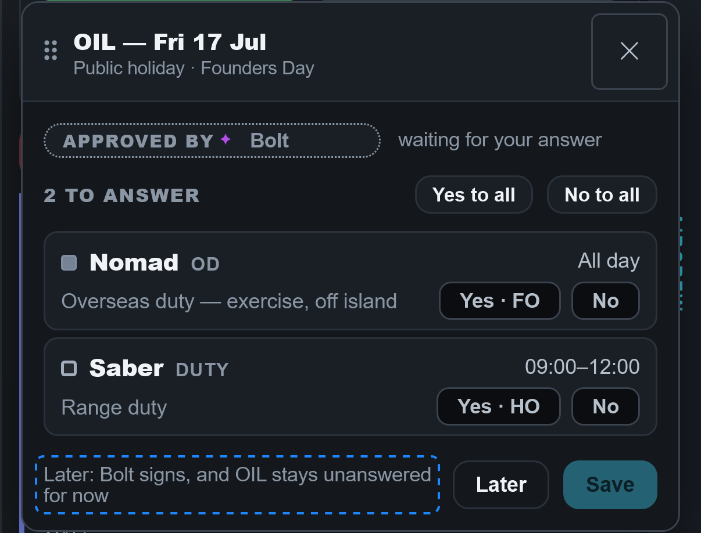
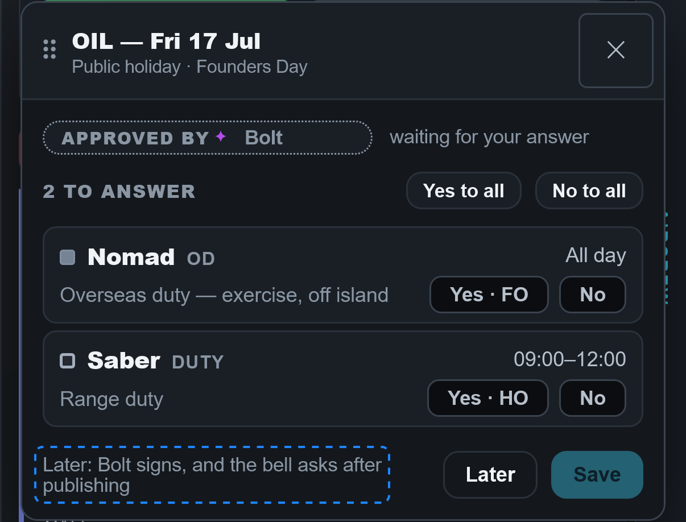
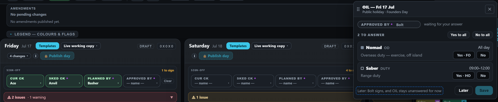
To draw this, Friday 17 Jul was made a public holiday in the demo ("Founders Day"), and Saber filed a three-hour duty on it.
When: Thursday, Saber picks CUR CK and is refused, so three boxes turn red. He types one of them, then by mistake empties the SXO end on the second wave.
Built: the newly emptied box shows grey until the next refused press, while the other two stay red. The sign-off line still counts it, and every press is still refused.
Recommended: red at once while the day already has a red box. He has already been told, and two colours for the same fault on one day is confusing. Once every time is typed, the day goes back to grey for next time.
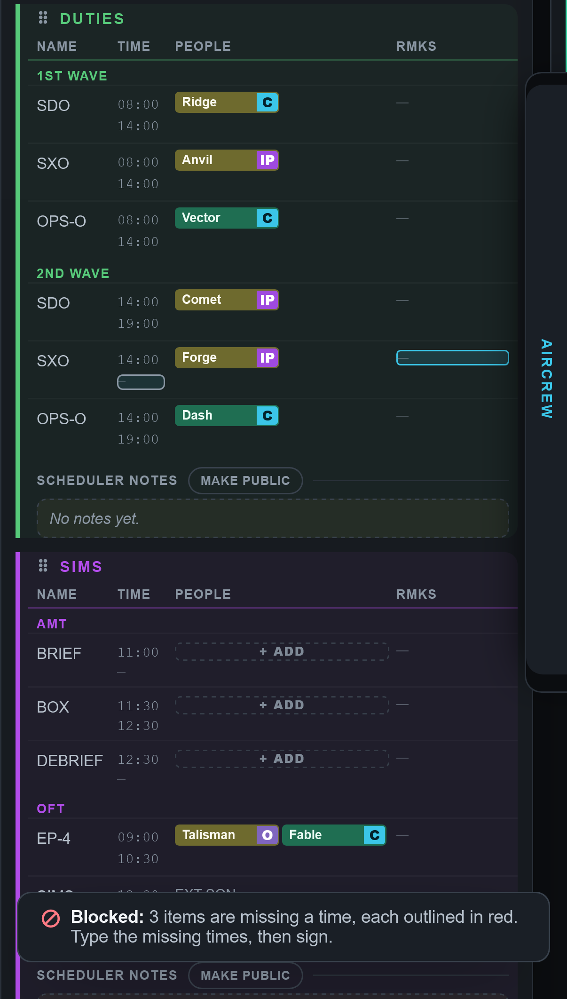
When: a scheduler types only an end time on a Common Programme row, for example SODB "— 08:00", and leaves it. This is rare.
Built (as today): not counted, so the day can be published with that row's start empty. A row with only its start typed is counted (SQN PT, outlined in the picture).
Recommended: count it too and outline its start. One rule: any time typed asks for the other.
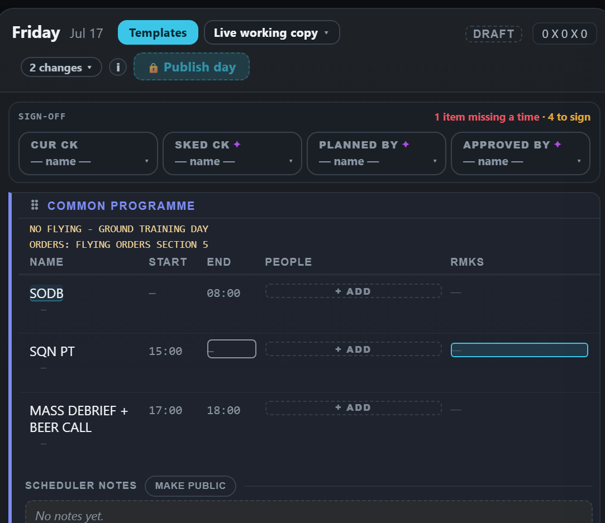
When: a scheduler presses Publish day or Publish AL with a time missing.
You ruled the sign-off note: "… Type the missing times, then sign." For Publish, the note ends "… Thursday was not published." (or "AL1 was not published."). I built it with that sentence in place of "Type the missing times, then sign.", because at Publish all four names may already be signed. Fable read it and agreed.
Recommended: keep as built (third picture above).
Also built without your reading: once all four names show (an older saved week) and a time is missing, the line reads "2 items missing a time" alone. Recommended: keep.
This is high-risk work: it can stop a day being published. Opus built it, as you asked for this week. Fable's own read of the finished code waits for Monday's allowance reset. Until then, two fresh Opus readers and Astra read it.
Recommended: I build your round-1 answers and the Legend line on the same branch and check them. You look at the preview again, then say "merge live". Fable reads it after Monday; anything it finds is fixed as a follow-up.
Later rounds, not for now: which rows count in rare cases (cancelled flights, a sim's EXT SQN label, a kept all-day row), how long red lasts, the Amendments panel's Publish AL, the board's count line tap, the hover words, the Logic page's words, and the amendment-colours plan (it needs revising first).